Voz & áudio
TTS, clonagem de voz, transcrição e conversão de fala.
38 links
| Vídeo | Projeto | O que faz | Pasta de origem | |
|---|---|---|---|---|
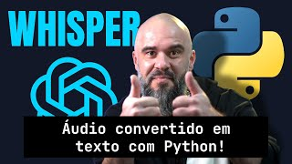 Whisper OpenAI: Guia Completo de Transcrição com | 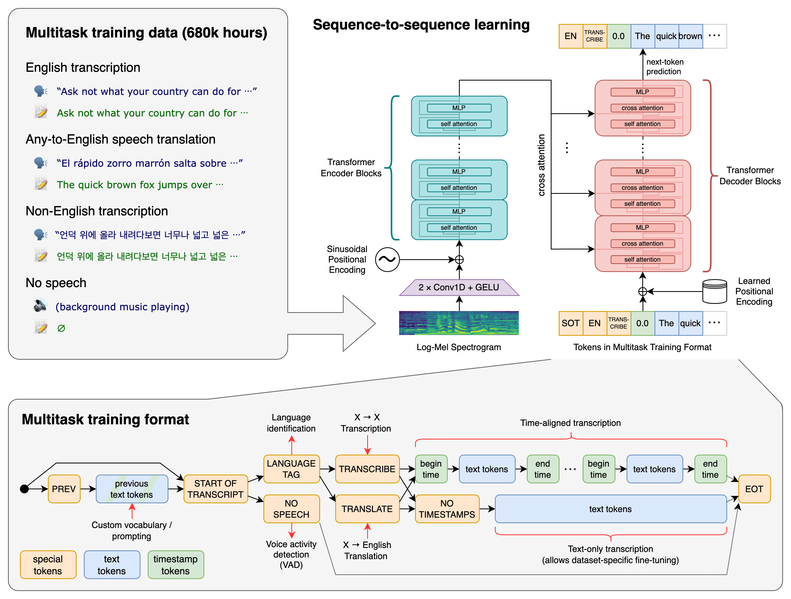 | openai/whisper | 111k★ · transcrição de áudio em dezenas de idiomas (base do whisper.cpp que você usa). | curado — busca na internet |
| Transcrição e Sumarização de vídeos com OpenAI W | 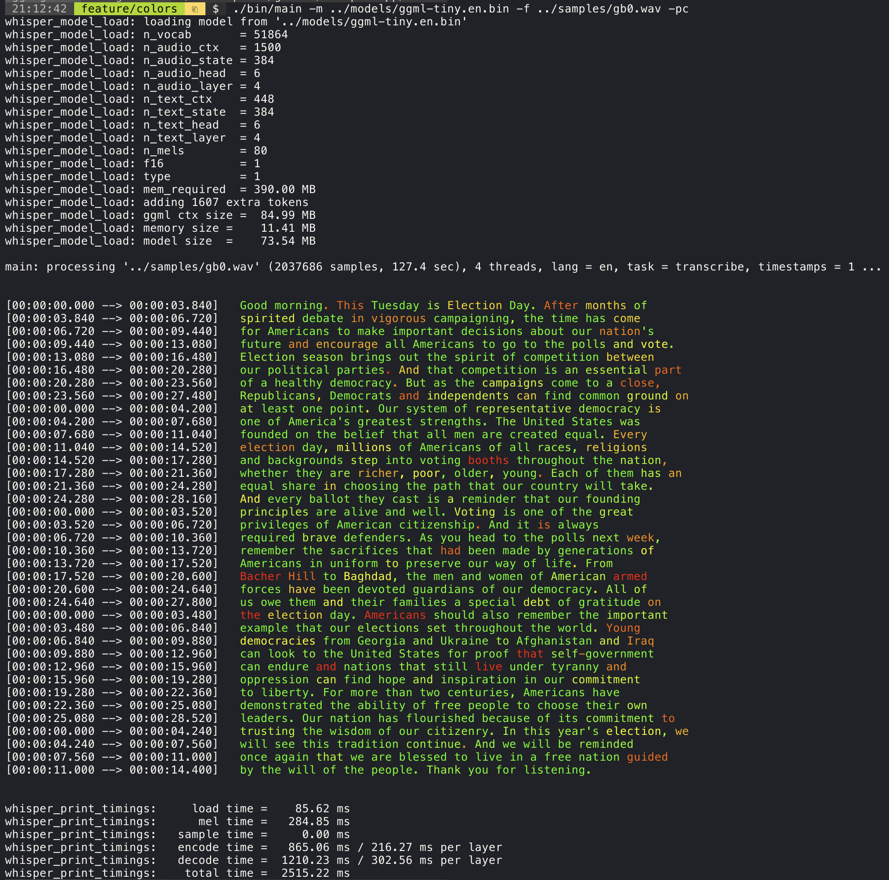 | ggml-org/whisper.cpp | 45k★ · Whisper em C/C++ — o servidor local que roda no seu PC. | curado — busca na internet |
| Whisper OpenAI: Guia Completo de Transcrição com | 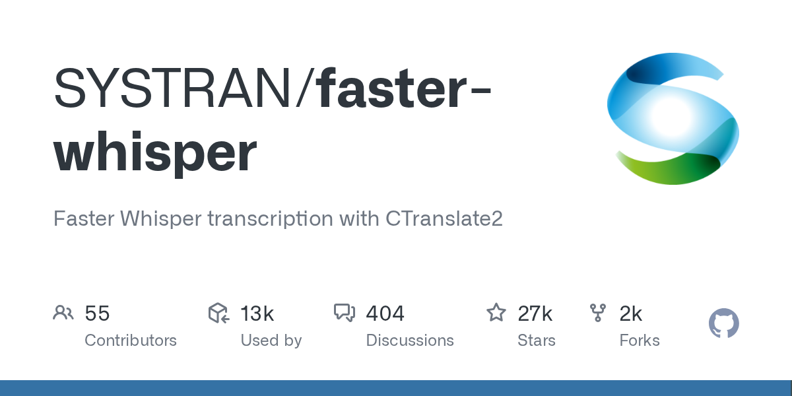 | SYSTRAN/faster-whisper | 26.7k★ · Whisper 4× mais rápido com CTranslate2 (o que quase todo mundo usa em produção). | curado — busca na internet |
| Troquei a OpenAI pelo meu próprio modelo de tran | 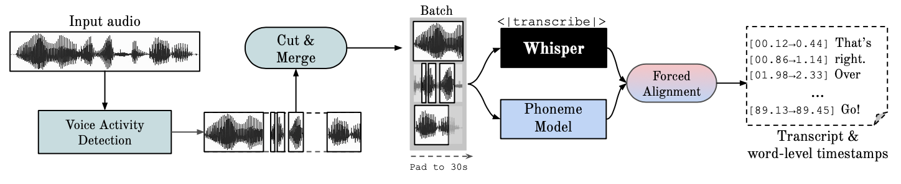 | m-bain/whisperX | 25.2k★ · transcrição com timestamps por palavra e separação de falantes. | curado — busca na internet |
| COMO JOGAR BEM DE BUZZ 🔥GUIA COMPLETO | 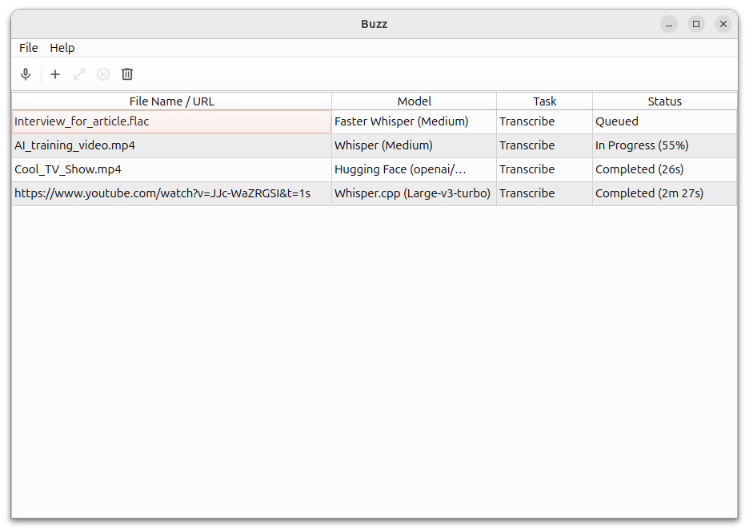 | chidiwilliams/buzz | 22.7k★ · app de transcrição/tradução offline no PC. | curado — busca na internet |
| ⭐ Speechelo Português | O melhor Text-to-Speech | 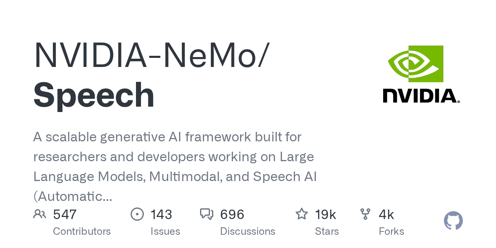 | NVIDIA-NeMo/Speech | 18.7k★ · framework de fala da NVIDIA (ASR, TTS, diarização). | curado — busca na internet |
| Como criar seu primeiro Agente de Voz com IA usa | 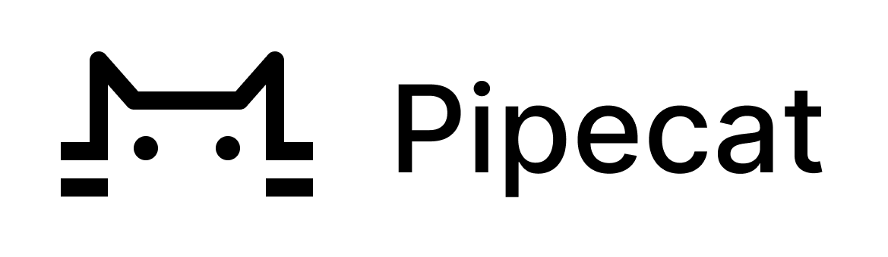 | pipecat-ai/pipecat | 17.2k★ · framework para agentes de voz em tempo real. | curado — busca na internet |
| COMO CRIAR VOZES COM IA GRÁTIS PT-BR no ComfyUI | 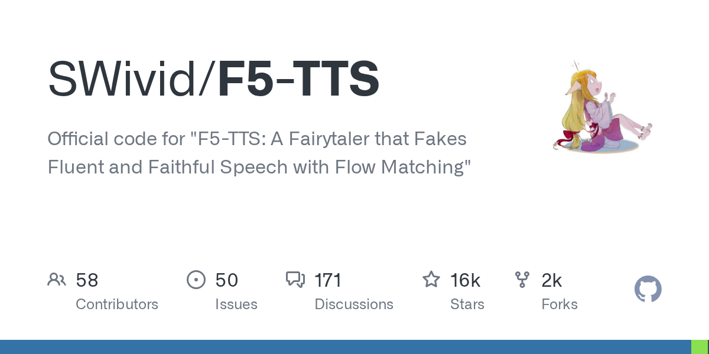 | SWivid/F5-TTS | 15.6k★ · TTS com clonagem de voz por few-shot. | curado — busca na internet |
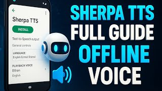 Sherpa TTS Full Guide – Use Realistic Offline Vo | 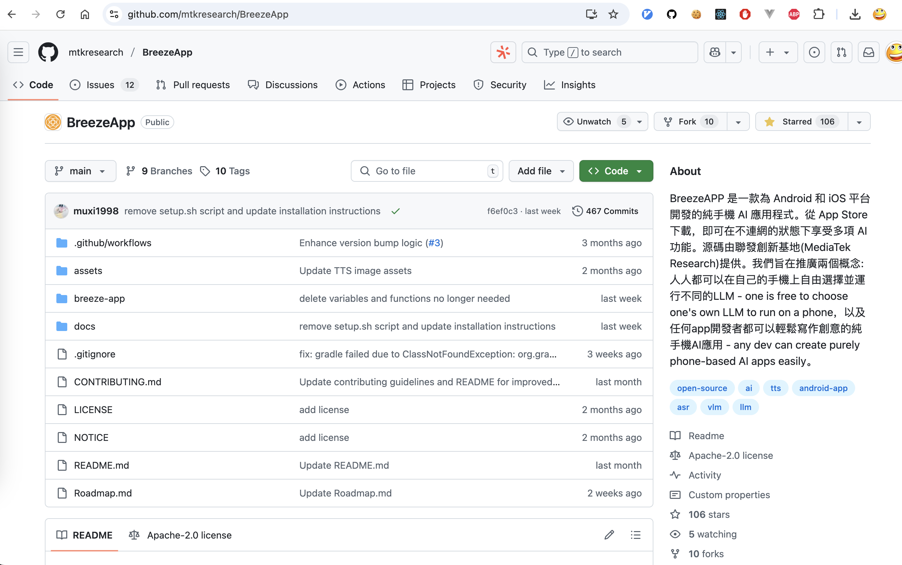 | k2-fsa/sherpa-onnx | 15.9k★ · STT, TTS e separação de voz em ONNX (roda em qualquer lugar). | curado — busca na internet |
| 2026 Best AI Agent Video Editor (Plot Party Agen | 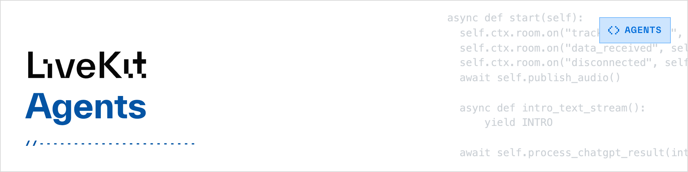 | livekit/agents | 15.2k★ · agentes de voz em tempo real (WebRTC). | curado — busca na internet |
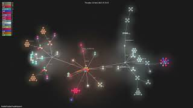 PaddlePaddle/PaddleSpeech - Gource visualisation | 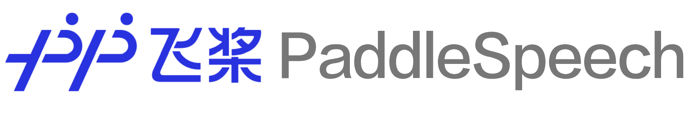 | PaddlePaddle/PaddleSpeech | 12.7k★ · toolkit de fala: ASR, TTS e tradução em streaming. | curado — busca na internet |
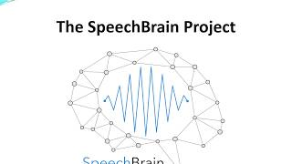 The SpeechBrain Project | speechbrain/speechbrain | 11.9k★ · toolkit de fala em PyTorch. | curado — busca na internet | |
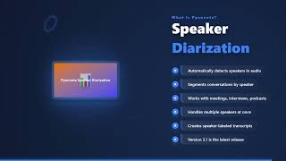 O que é o Pyannote Speaker Diarization 3.1? | 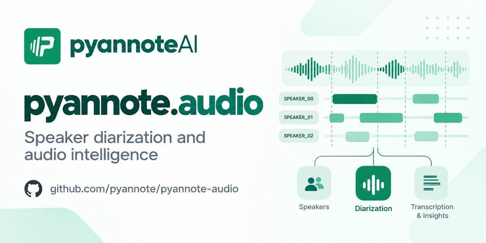 | pyannote/pyannote-audio | 10.8k★ · diarização (quem falou o quê) e detecção de fala. | curado — busca na internet |
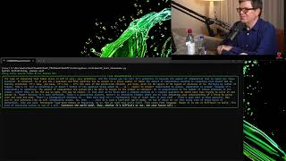 Second demo: fast, high quality realtime speech | 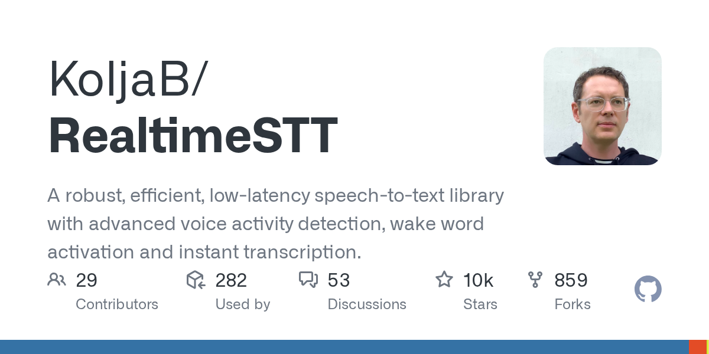 | KoljaB/RealtimeSTT | 10.2k★ · STT de baixa latência com detecção de voz. | curado — busca na internet |
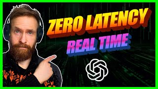 Transcrição de fala em texto em tempo real com I | Vaibhavs10/insanely-fast-whisper | 13k★ · transcrição ultrarrápida em GPU. | curado — busca na internet | |
| Instalando o Pinokio na GTX 1070TI Em 2025 + Tes | 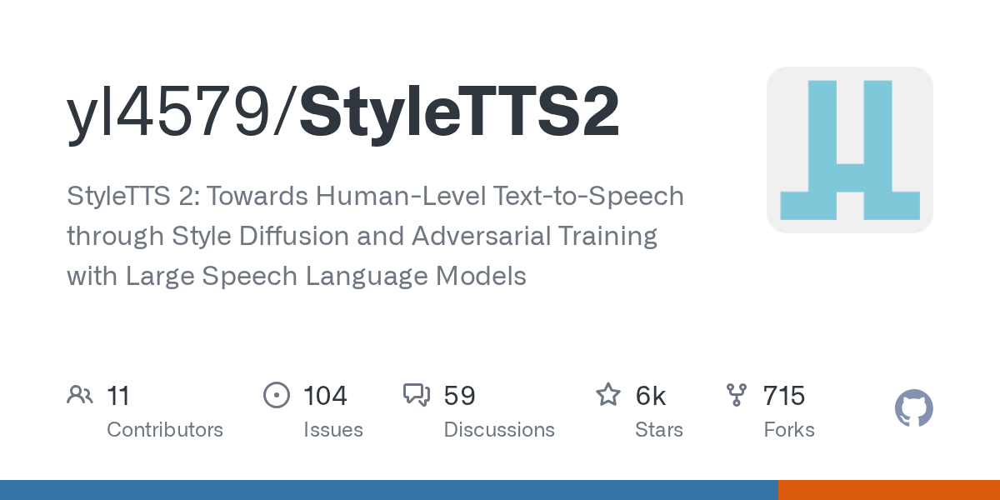 | yl4579/StyleTTS2 | 6.4k★ · TTS com qualidade quase humana (estilo). | curado — busca na internet |
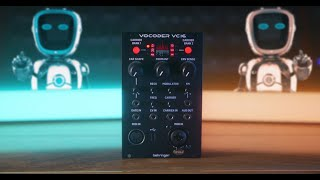 Apresentando o Behringer Vocoder VC16 | vocodedev/vocode-core | 3.8k★ · agentes de voz modulares. | curado — busca na internet | |
| Whisper-WebUI na NUVEM com MIMICPC: Transcreva e | 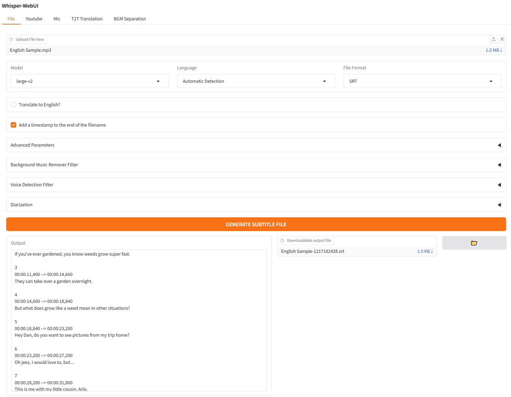 | jhj0517/Whisper-WebUI | 2.9k★ · interface web para gerar legendas com Whisper. | curado — busca na internet |
| VoiceStudio: o estúdio de voz grátis (tutorial) | 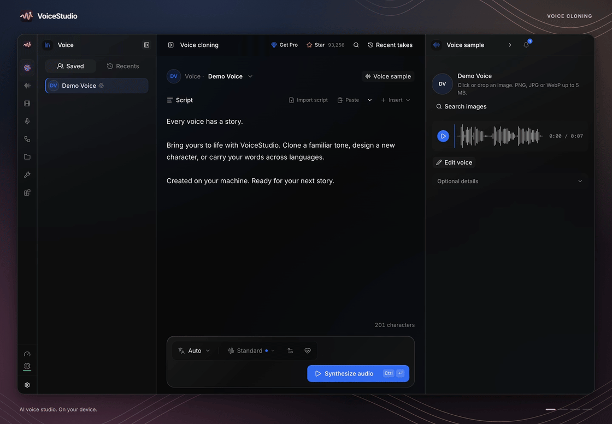 | debpalash/VoiceStudio | 109k★ · estúdio de voz local: clonagem, TTS e dublagem (alternativa ao ElevenLabs). | PROGRAMAÇÂO IA AGENT / GITHUBS / VARIADOS |
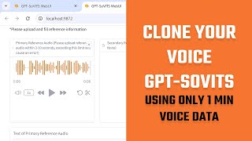 Como clonar sua voz usando GPT-SoVITS GRATUITAME | 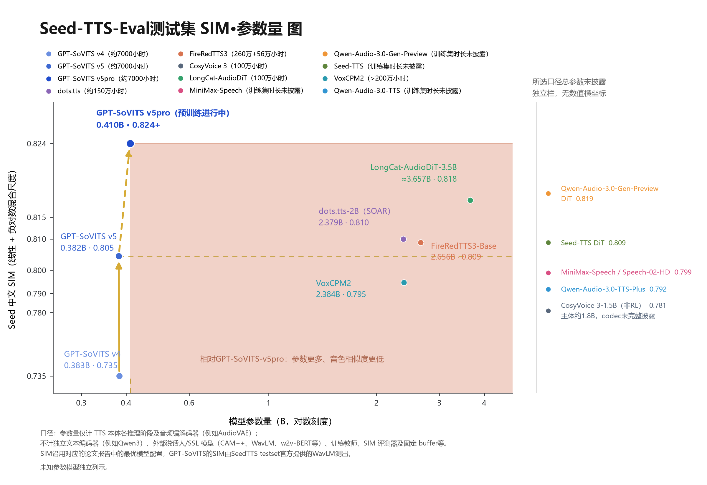 | RVC-Boss/GPT-SoVITS | 64.9k★ · clona uma voz com 1 minuto de áudio (few-shot). | curado — busca na internet |
| Aprenda a dominar a geração de áudios longos no | 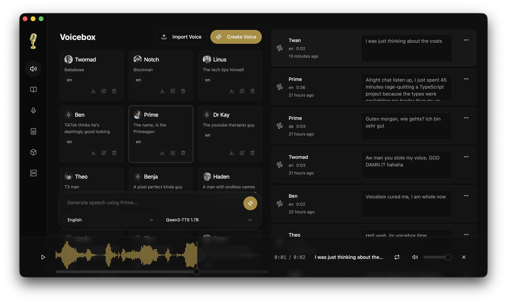 | jamiepine/voicebox | 60.5k★ · estúdio de voz open-source: clonar, ditar e criar. | curado — busca na internet |
| 🔥Qwen3-TTS é Open Source e Pode Ameaçar o Eleven | 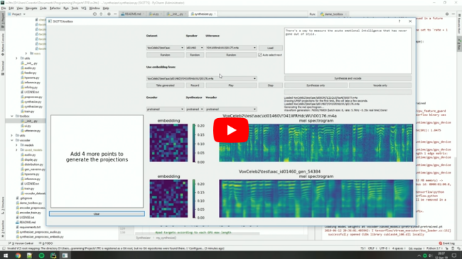 | CorentinJ/Real-Time-Voice-Cloning | 60.2k★ · clona uma voz em 5 segundos e fala em tempo real. | curado — busca na internet |
| 🔥Qwen3-TTS é Open Source e Pode Ameaçar o Eleven | 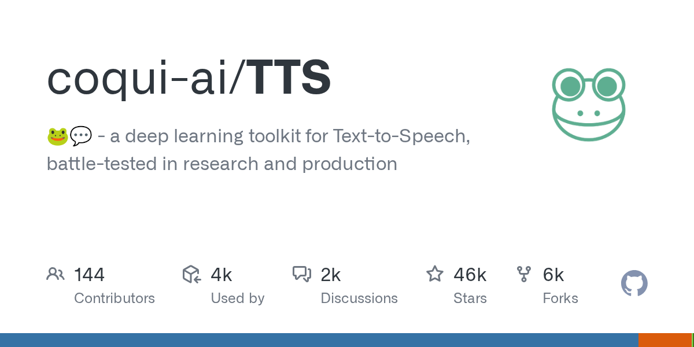 | coqui-ai/TTS | 46.2k★ · toolkit de TTS para pesquisa e produção. | curado — busca na internet |
| Análise e tutorial do VoxCPM 2 - 2026 | Crie clo | 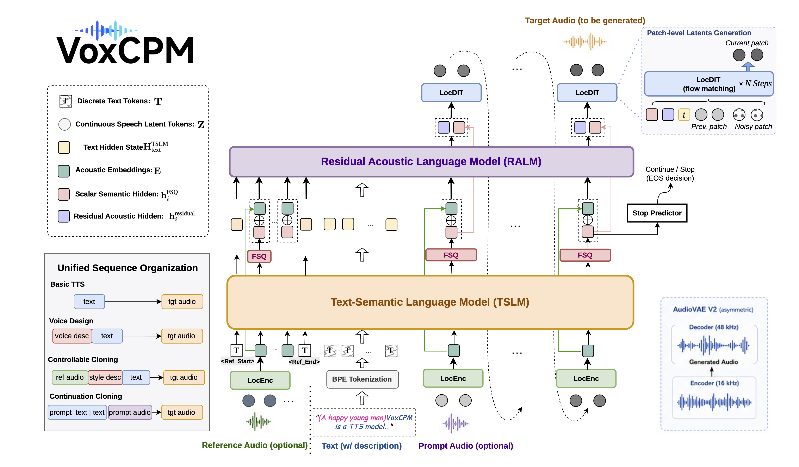 | OpenBMB/VoxCPM | 42.4k★ · TTS multilíngue sem tokenizer (design de voz). | curado — busca na internet |
| Handy: Transcrição Local Gratuita | cjpais/Handy | 38.6k★ · app de transcrição de voz que roda 100% offline. | curado — busca na internet | |
| COMO CRIAR TENANT | TUTORIAL OPEN VOICE | 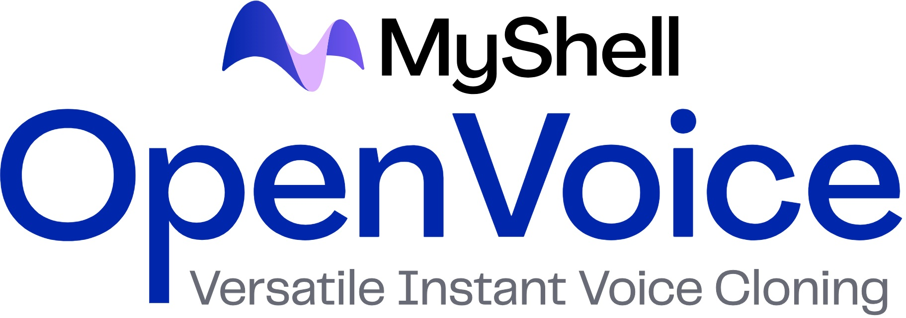 | myshell-ai/OpenVoice | 38.2k★ · clonagem instantânea de voz (MIT/MyShell). | curado — busca na internet |
| Sota!Index TTS 2.0 Clonagem de voz e controle de |  | index-tts/index-tts | 25k★ · TTS zero-shot industrial, controlável. | curado — busca na internet |
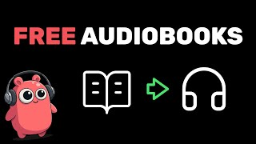 Audiolivros DIY: transforme seus e-books em audi | 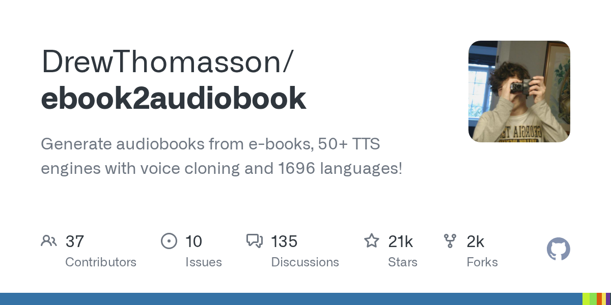 | DrewThomasson/ebook2audiobook | 20.5k★ · transforma e-book em audiolivro com 50+ motores de TTS. | curado — busca na internet |
| OmniVoice GRÁTIS: Clone Sua Voz e Gere Áudio com | k2-fsa/OmniVoice | 16.5k★ · clonagem de voz em 600+ idiomas. | curado — busca na internet | |
| 🔥Qwen3-TTS é Open Source e Pode Ameaçar o Eleven |  | QwenLM/Qwen3-TTS | 14.4k★ · modelos de TTS da Qwen. | curado — busca na internet |
| Gerador de Voz do Google AI Studio – Tutorial de | 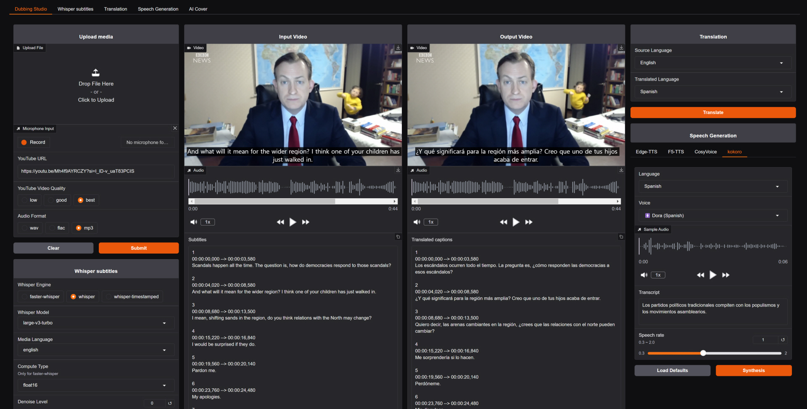 | abus-aikorea/voice-pro | 13.4k★ · WebUI com TTS, clonagem e legendas. | curado — busca na internet |
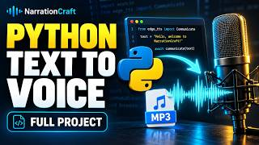 Crie um Gerador de Texto para Fala em Python! 🐍🔊 | 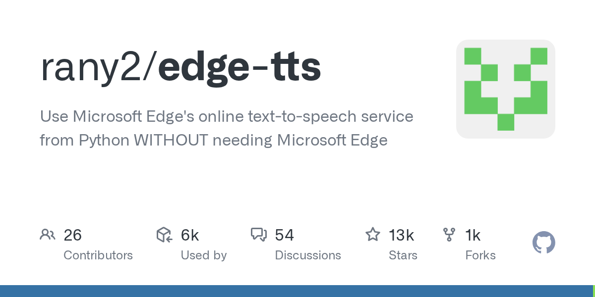 | rany2/edge-tts | 12.5k★ · usa o TTS do Edge sem precisar do Windows. | curado — busca na internet |
| Tutorial de como fazer a edit de Real moonshine | 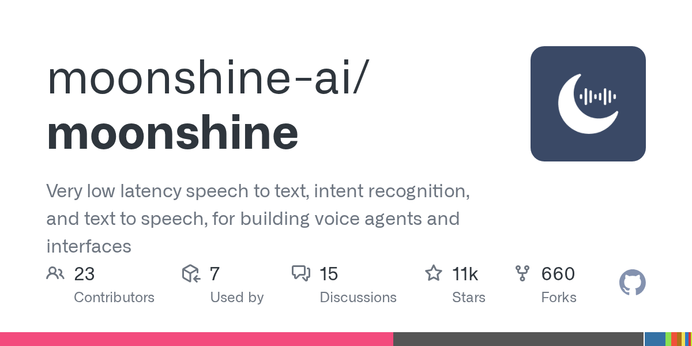 | moonshine-ai/moonshine | 11.5k★ · fala para texto com latência muito baixa. | curado — busca na internet |
| COMO JOGAR DE PIPER - GUIA COMPLETO | 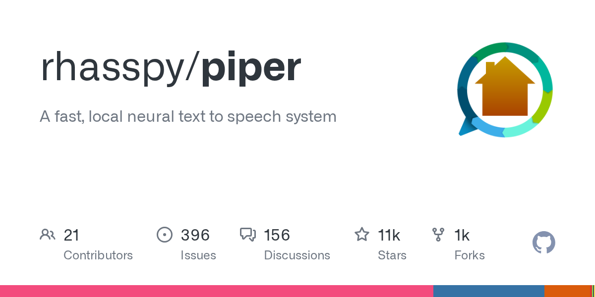 | rhasspy/piper | 11.3k★ · TTS neural rápido e local. | curado — busca na internet |
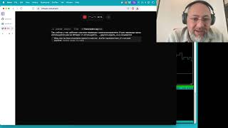 WhisperLiveKit 0.2.17 demo RU to EN realtime tra | QuentinFuxa/WhisperLiveKit | 11.2k★ · transcrição em tempo real com diarização e tradução. | curado — busca na internet | |
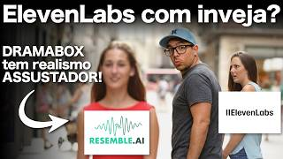 Clone sua voz com EMOÇÃO - DramaBox é MELHOR que | 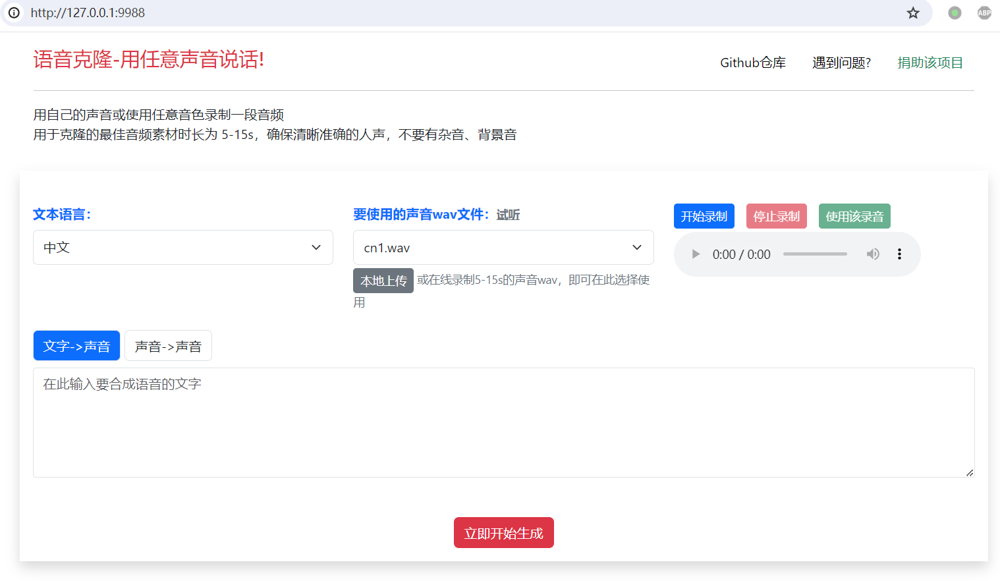 | jianchang512/clone-voice | 9k★ · ferramenta de clonagem de voz com interface web. | curado — busca na internet |
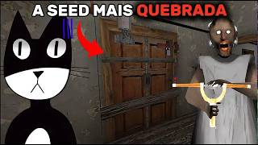 Essa é a MELHOR seed para fugir pela PORTA! (É S | 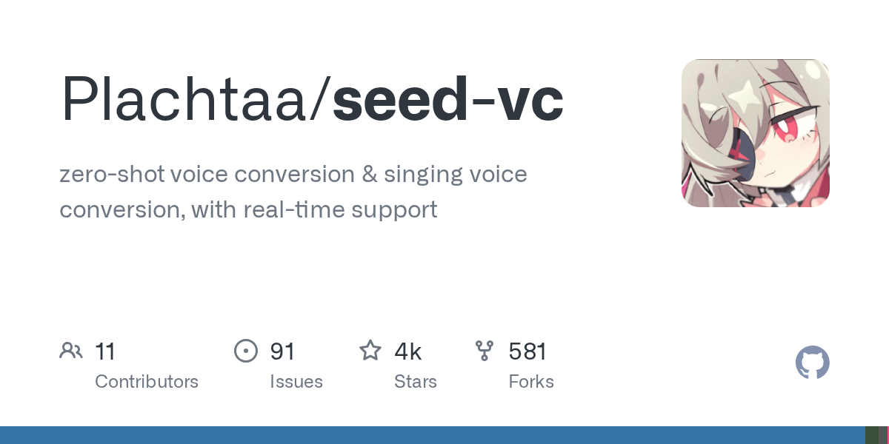 | Plachtaa/seed-vc | 3.9k★ · conversão de voz e de canto (zero-shot, tempo real). | curado — busca na internet |
| sem vídeo | sem print | SaarthurR/atticus-mac | Assistente de voz grátis para Mac, sem API key: lembra de você e aprende seus atalhos (⌃⌥Espaço e fala). | curado — busca na internet |